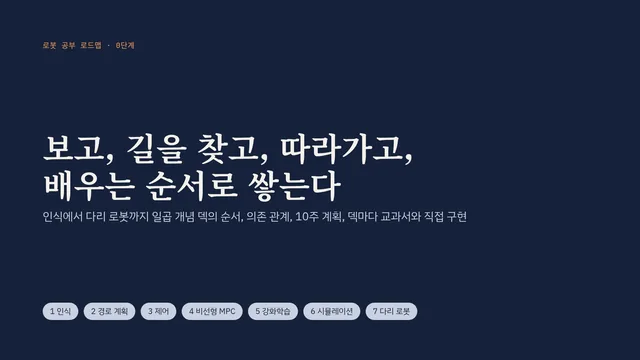
0 · 로봇 공부 로드맵일곱 개념 덱을 어떤 순서로 볼까12장 · PPTX
실외 보도 배달로봇(비동축 스워브)이 costmap 대신 2.5D 지형 표현(높이, 경사, 턱, 거칠기, 불확실성)만으로 턱·경사·포트홀을 피해 목적지까지 가게 하는 연구다. 학습 Planner가 경로를 내고 MPPI·NMPC Controller가 따라간다.

0 · 로봇 공부 로드맵일곱 개념 덱을 어떤 순서로 볼까12장 · PPTX
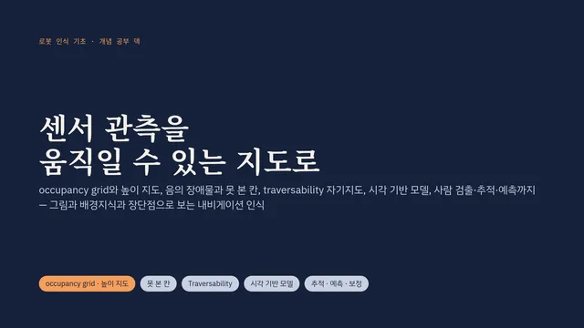
1 · 로봇 인식 기초지형 지도에서 사람 추적까지38장 · PPTX
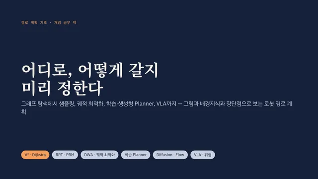
2 · 경로 계획 기초탐색에서 생성형 Planner까지47장 · PPTX
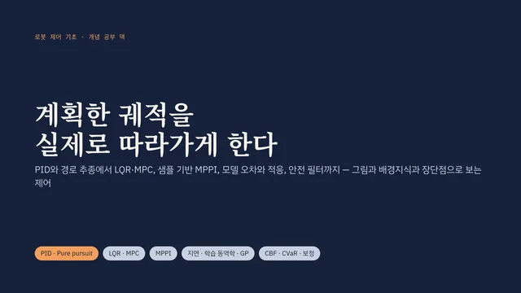
3 · 로봇 제어 기초PID에서 MPPI와 안전 필터까지45장 · PPTX
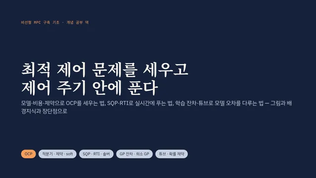
4 · 비선형 MPC 구축 기초문제 세우기, 실시간 풀이, 모델 오차38장 · PPTX
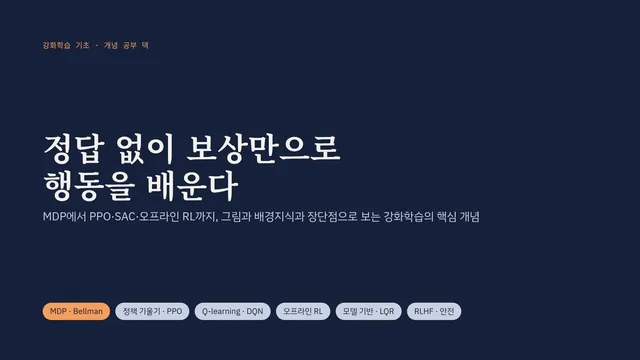
5 · 강화학습 기초그림과 장단점으로 보는 핵심 개념54장 · PPTX
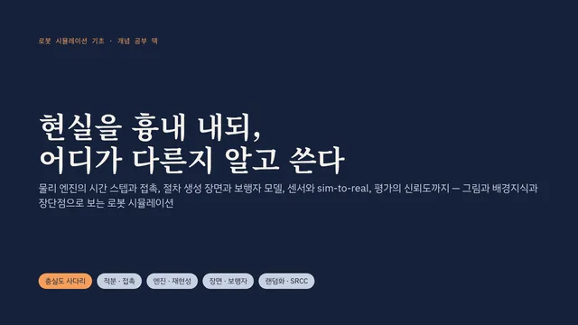
6 · 로봇 시뮬레이션 기초물리 엔진에서 sim-to-real까지32장 · PPTX
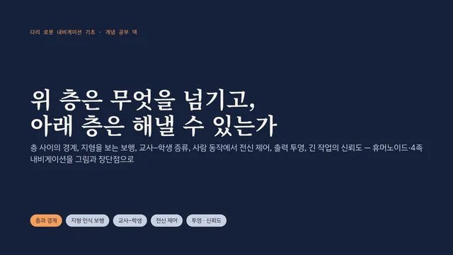
7 · 다리 로봇 내비게이션 기초층과 경계, 지형 보행, 전신 제어37장 · PPTX
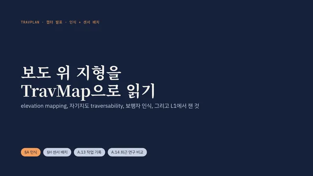
인식40장 · PPTX
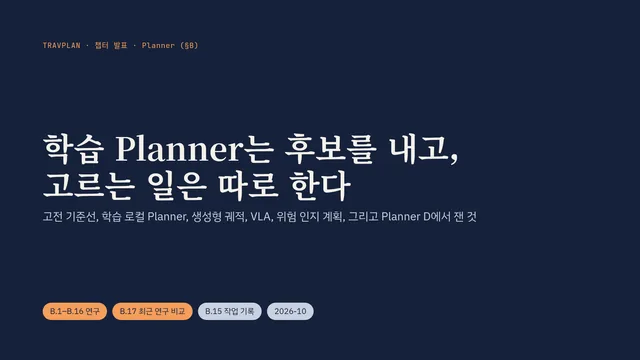
Planner40장 · PPTX
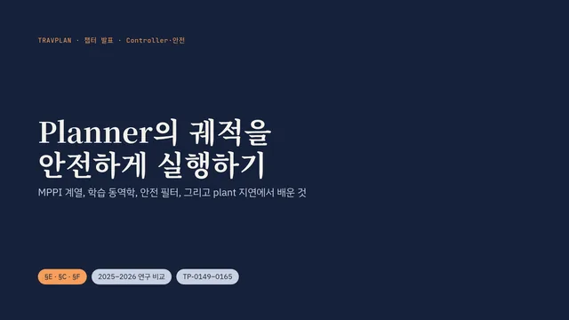
Controller·안전40장 · PPTX
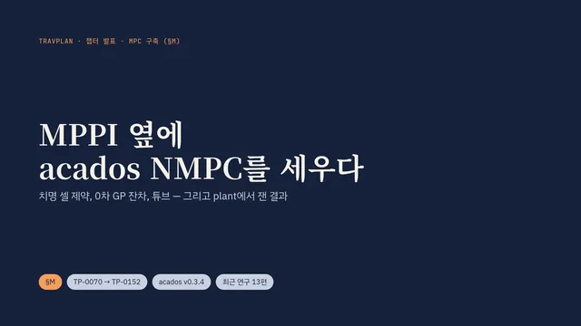
MPC 구축35장 · PPTX
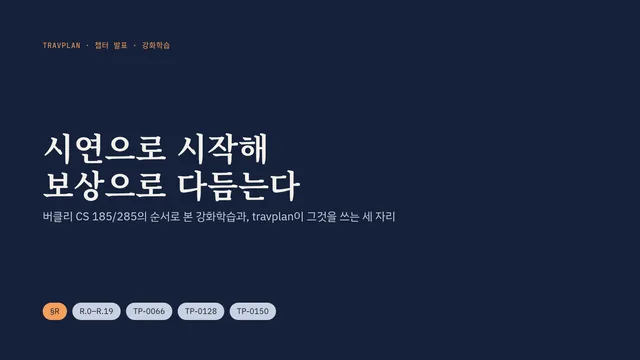
강화학습43장 · PPTX
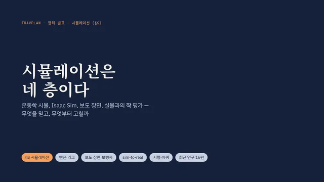
시뮬레이션35장 · PPTX
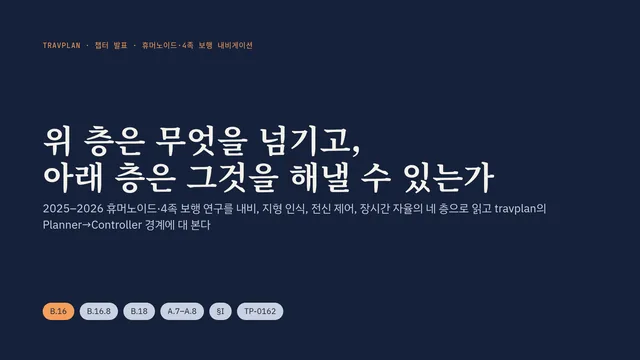
휴머노이드·4족 보행 내비게이션37장 · PPTX
TravMap[8,H,W]: elev, grad, slope, step, rough, cost, sigma. 치명 셀은 cost ≥ 0.95.